Il mio percorso
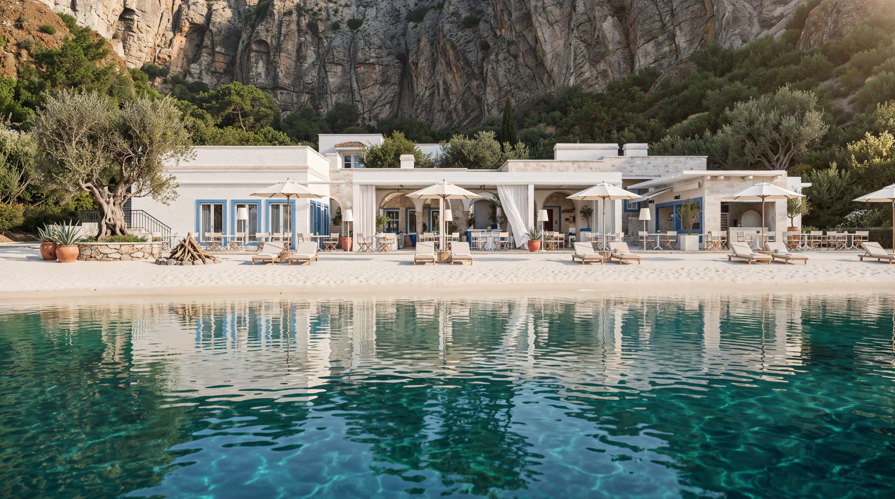
↔
Processo
Finale
Video IA
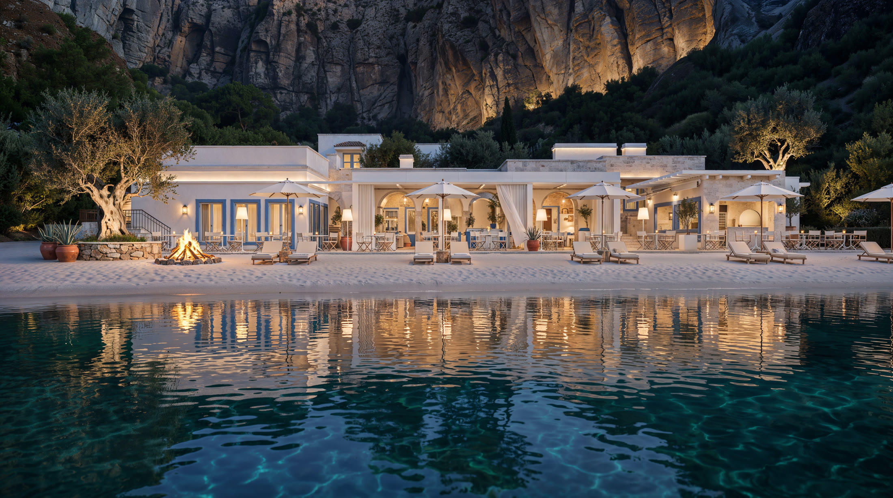
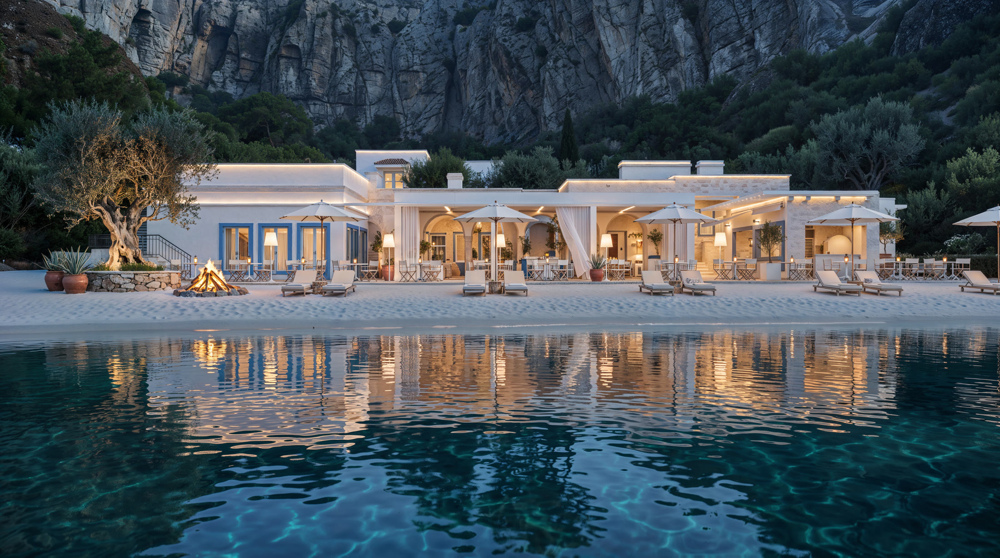
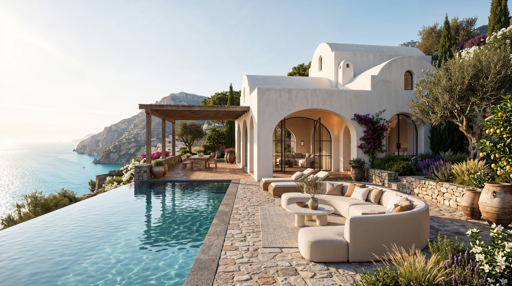
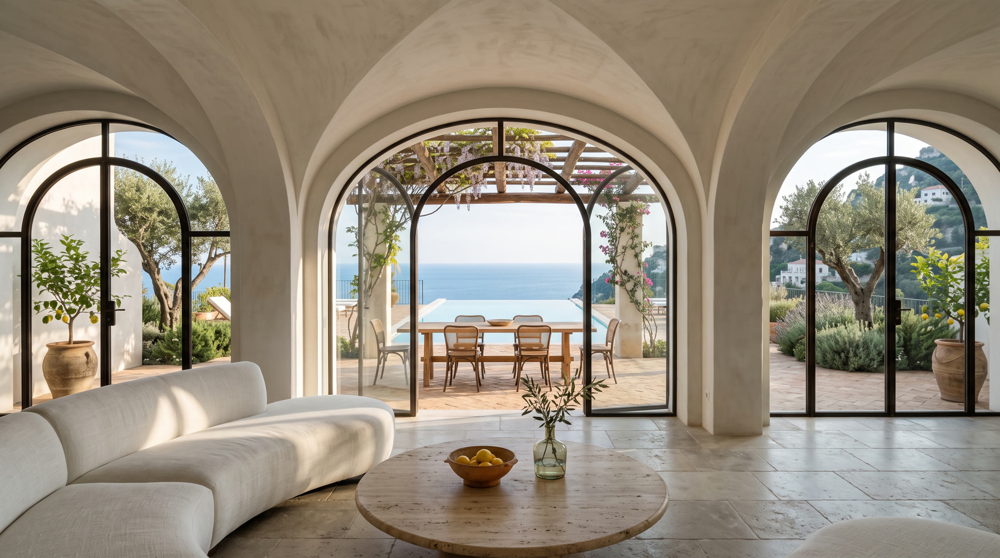
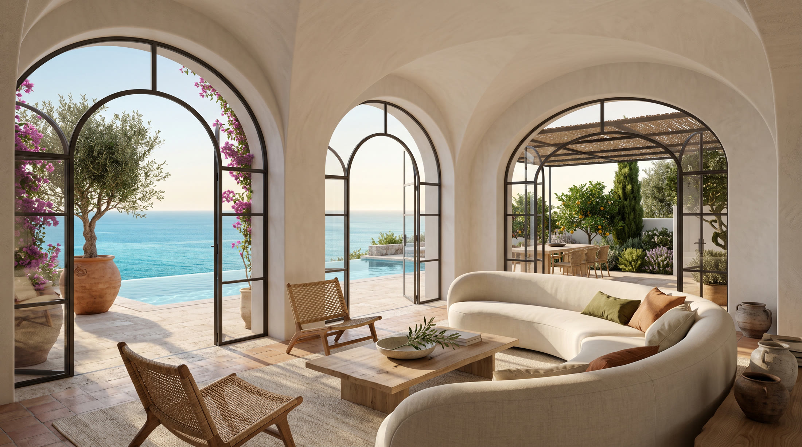
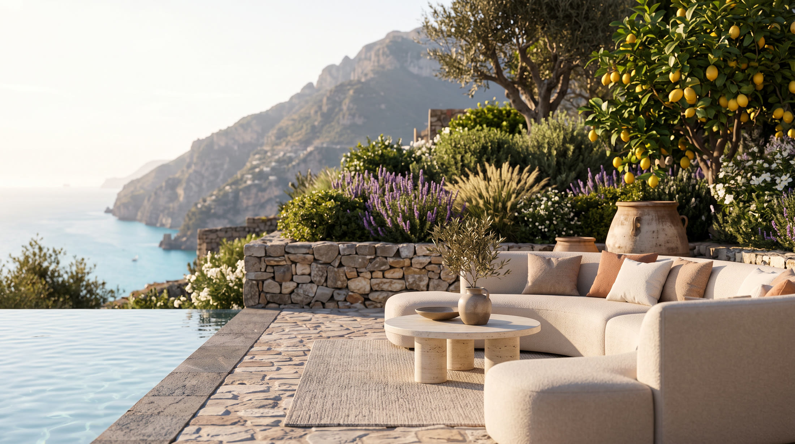
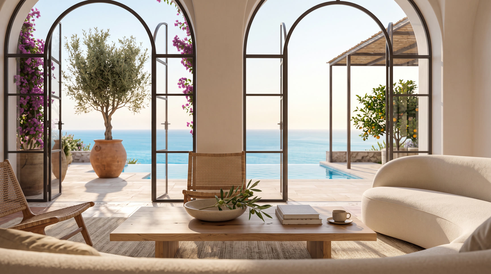
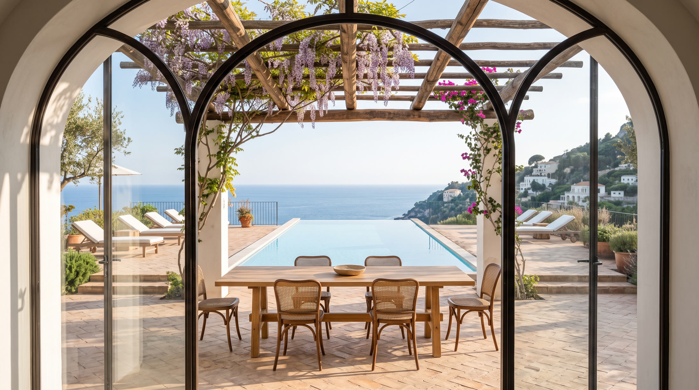
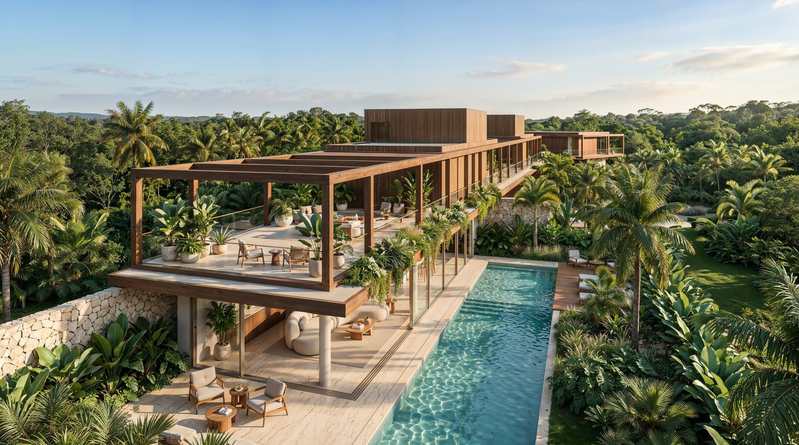
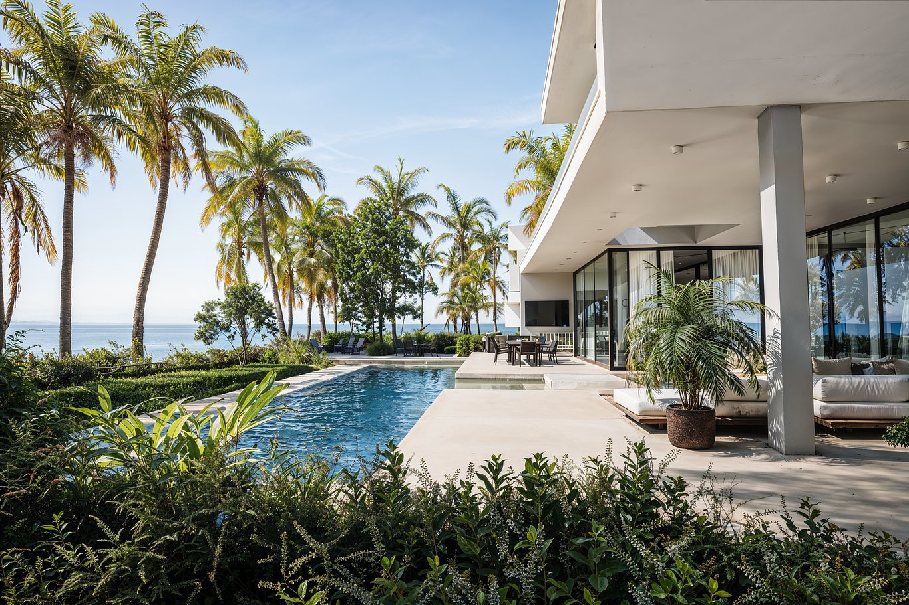


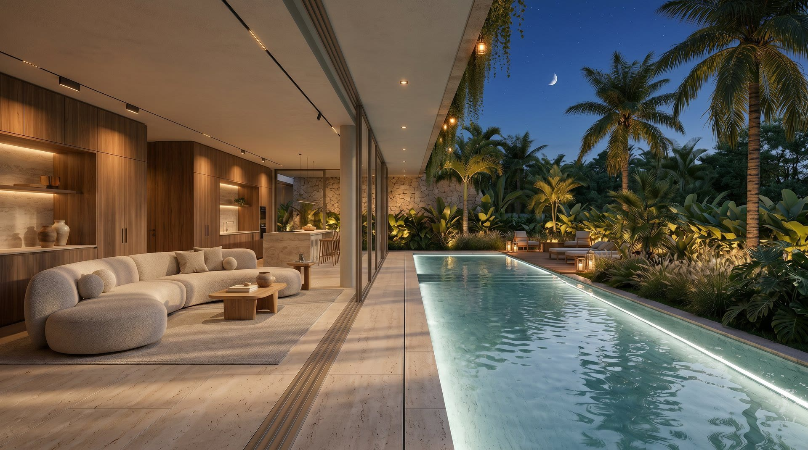
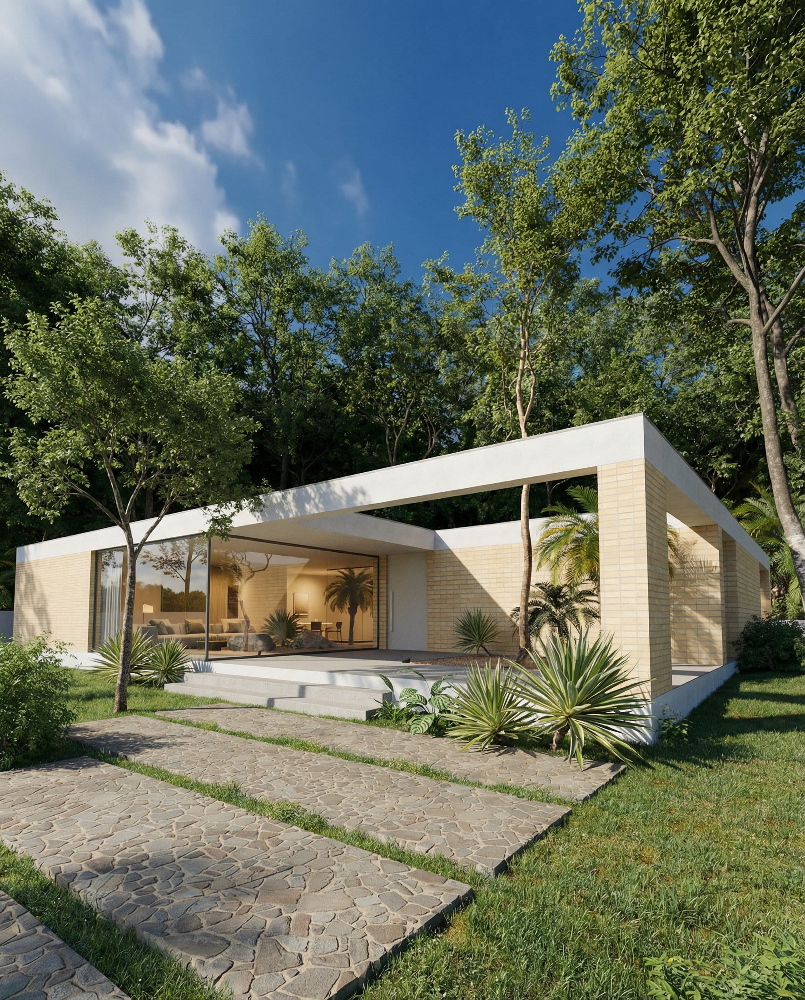

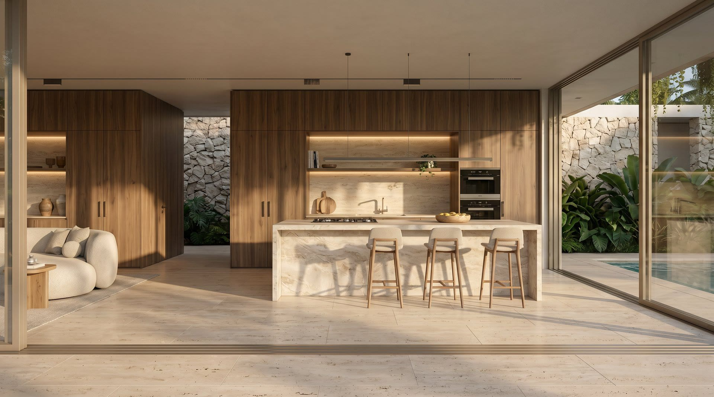
Contatto — Parliamone
Hai un progetto in mente?
Hai un progetto in mente?
Scrivimi.
Aperto a collaborazioni in realtime, visualizzazione e sviluppo front-end — con team internazionali, da remoto e affidabile. Costruiamo insieme qualcosa di straordinario.